| 1 |
2593880 |
![TUYU - Kako ni Torawarete Iru (Keqing) [Kowari's Extra]](./HSC42024QF.covers/1-2593880.jpg) |
NM |
Pooler 2: 5WC凭空杀出来一张NM1 |
| 2 |
4461687 |
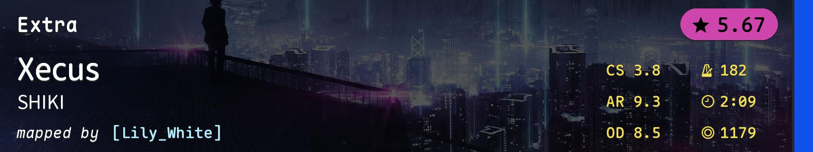 |
NM |
Pooler 4: 5.6 NM2就那几个 |
| 3 |
4461726 |
![*Luna - Innocent ([Lily_White]) [Graphical's Expert (edit)]](./HSC42024QF.covers/3-4461726.jpg) |
NM |
神秘人: 我问下麻婆能不能改图 |
| 4 |
4332037 |
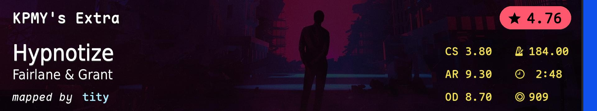 |
NM |
Pooler 3: 我觉得不 这玩意儿场上最多俩fc |
| 5 |
1439335 |
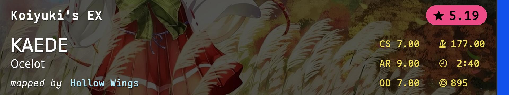 |
NM |
Pooler 3: NM5干脆来个CS7 |
| 6 |
4140263 |
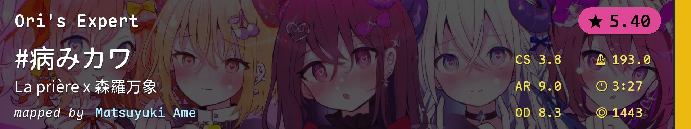 |
HD |
Pooler 3: 问就是降低HD2的ban率 |
| 7 |
1644339 |
![Alisa Kozhikina - Gravity - Zero (Testo) [Insane]](./HSC42024QF.covers/7-1644339.jpg) |
HD |
Pooler 3: 没有AR8HD |
| 8 |
967401 |
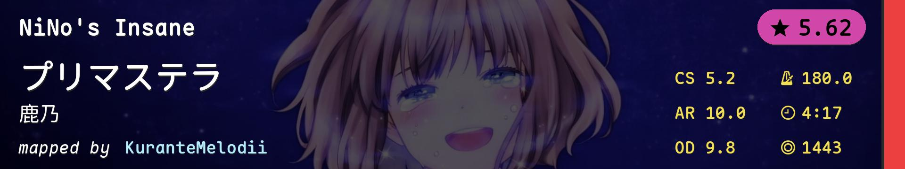 |
HR |
Pooler 4 |
| 9 |
3624727 |
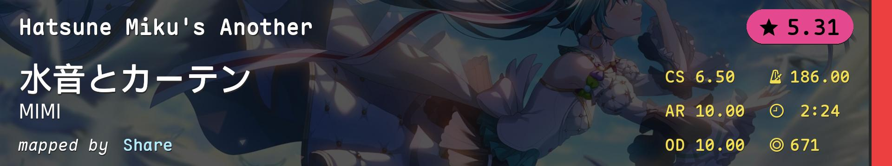 |
HR |
Pooler 1: 还是大葱吧！ |
| 10 |
3180611 |
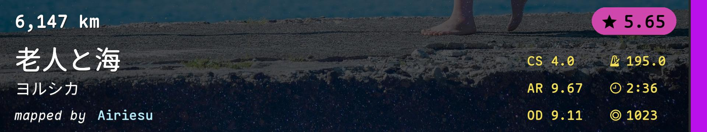 |
DT |
Pooler 3: Jump Training |
| 11 |
328977 |
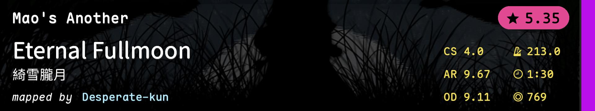 |
DT |
Pooler 3: DT2好！ |
| 12 |
3516212 |
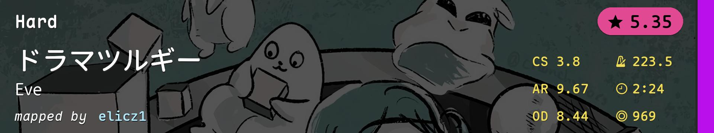 |
DT |
Pooler 1: 我怎么感觉这图比牛魔王还难呢 |
| 13 |
2306926 |
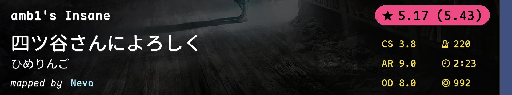 |
FM |
Pooler 1: 原来这是另一个set |
| 14 |
2619929 |
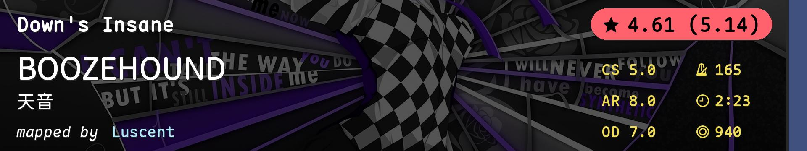 |
FM |
Pooler 4: 我没打过MP5 |
| 15 |
1968436 |
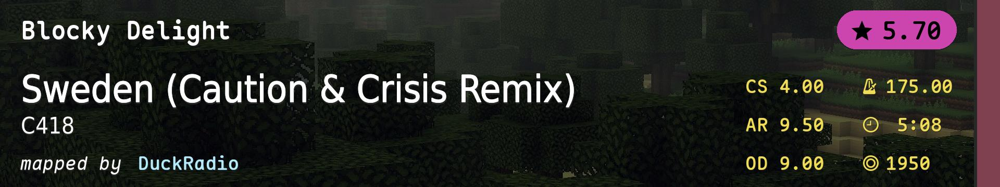 |
TB |
Pooler 2: @Pooler 1 早选早享福我支持 |